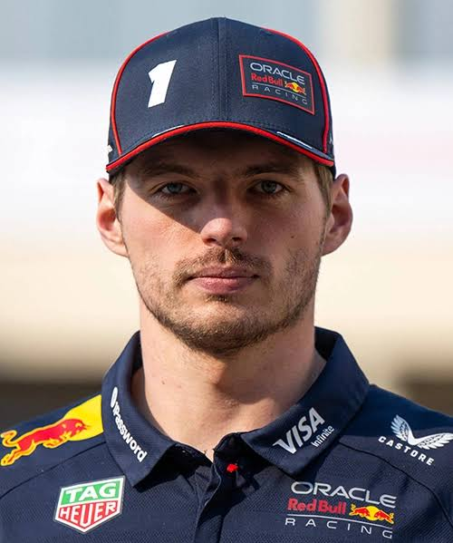
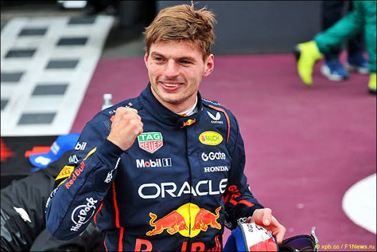
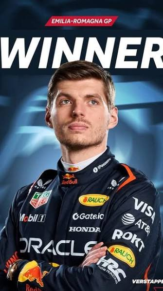

Red Bull Racing
← Back to drivers
Max Verstappen
Max Verstappen is a Dutch Formula 1 driver for Red Bull Racing. He began karting at a young age and reached Formula 1 in 2015, becoming one of the sport's most successful drivers.
NationalityDutch
TeamRed Bull Racing
F1 debut2015
Max Verstappen Gallery


About Max
Born in Belgium in 1997, Verstappen rose quickly through karting and junior racing categories before making his Formula 1 debut as a teenager.
Career highlights
- Became the youngest driver to compete in Formula 1.
- Made his Formula 1 debut with Toro Rosso in 2015.
- Joined Red Bull Racing in 2016.
- Won his first Formula 1 World Championship in 2021.